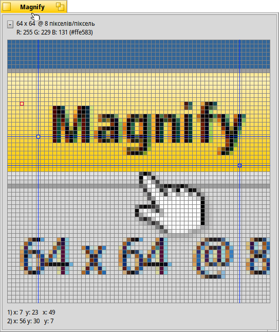

Magnify (Екранна лупа)
| Deskbar: | ||
| Розташування: | /boot/system/apps/Magnify | |
| Налаштування: | ~/config/settings/Magnify_prefs |
Magnify показує збільшене зображення області екрана навколо курсора миші.
При увімкненій опції у верхній частині вікна програми відображається кнопка виклику випливаючого меню і підписи даних: розмір області збільшення навколо курсора, кратність збільшення та колір пікселя.
«64 x 64 @ 8 пікселів/піксел» означає, що Ви бачите прямокутник розміром 64x64 пікселя навколо курсора миші і кожен піксель збільшено у 8 разів.
Нижче вказано колір пікселя, позначеного червоним контуром. Його колір представлений у вигляді RGB і шістнадцяткового значення.
Ви можете переміщати червоний контур за допомогою комбінації клавіш ← / → / ↑ / ↓.
Для вимірювання відстаней і вирівнювання об'єктів можна додати до двох перехресть синього кольору за допомогою комбінації клавіш ALT H. Їхні координати X/Y у нижньому лівому куті вікна програми і, якщо додано обидва перехрестя, поруч відображається відстань X/Y між ними.
Перехрестя можна переміщати за допомогою комбінації клавіш ← / → / ↑ / ↓. Активне перехрестя позначено знаком «х».
Ви можете переміщати курсор миші послідовно, піксель за пікселем за допомогою комбінації клавіш ALT ← / → / ↑ / ↓.
Правий клік миші на екрані відображення області збільшення відкриє випливаюче меню, яке складається з наступних пунктів:
| ALT S | Зберігає поточний екран відображення у вікні програми у форматі PNG. | ||
| ALT C | Робить копію поточного екрана відображення у вікні програми у буфер обміну. | ||
| ALT T | Показує додаткову інформацію. | ||
| ALT H | Додає перехрестя, яке можна переміщати по екрану відображення. | ||
| ALT SHIFT H | Прибирає останнє додане перехрестя. | ||
| ALT G | Показує накладену на збільшене зображення сітку. | ||
| ALT F | Робить стоп-кадр. Припиняє оновлення області збільшення. | ||
| ALT I | Продовжує оновлювати область збільшення, але більше не слідує за курсором миші. | ||
| ALT / | Робить квадратним екран відображення після зміни розміру вікна. | ||
| ALT - | Зменшує область збільшення навколо курсора миші. | ||
| ALT + | Збільшує область збільшення навколо курсора миші. | ||
| ALT , | Зменшує масштаб. | ||
| ALT . | Збільшує масштаб. |